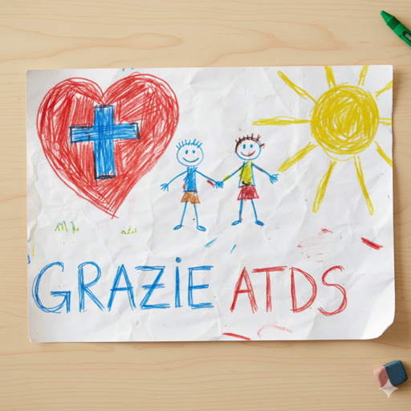
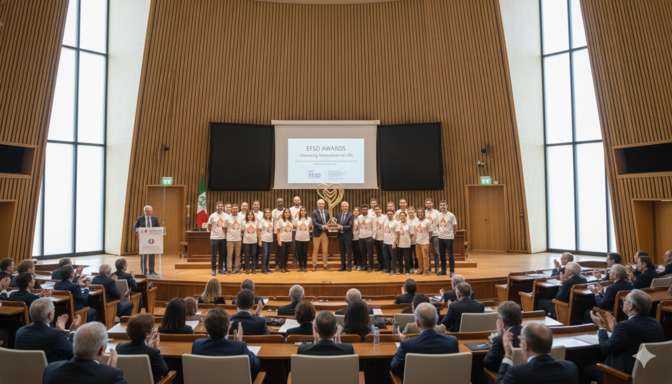
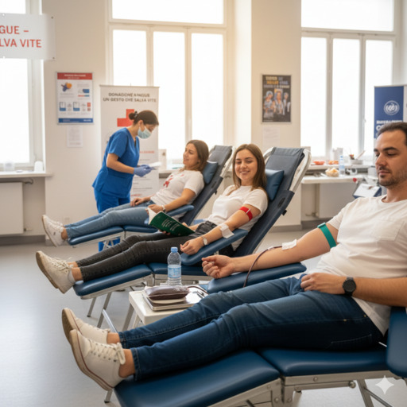
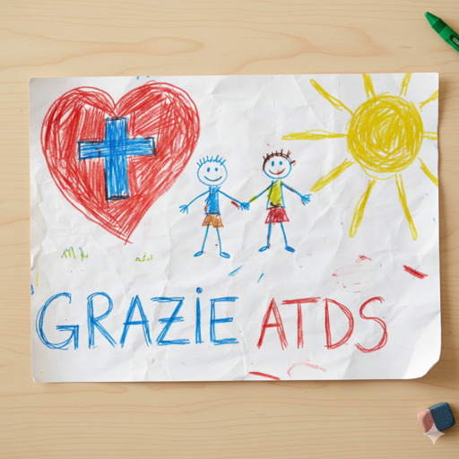
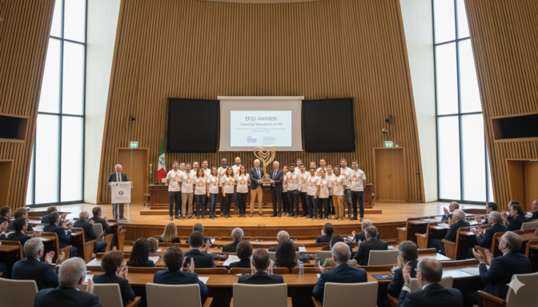
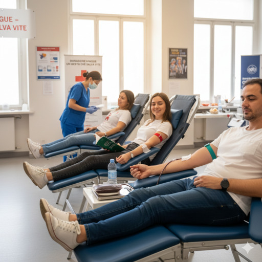

- Come nasce questa associazione?
La storia di ATDS non è iniziata in una sala riunioni, ma tra aule e laboratori di Informatica. Eravamo un gruppo come tanti: testa piena di codice, algoritmi complessi e la convinzione che ogni problema avesse una soluzione logica, ben strutturata... finché la realtà non si è fatta sentire.
Negli ospedali locali il bisogno di sangue era urgente. Ed è lì che ci siamo fatti una domanda semplice ma fondamentale: a cosa serve ottimizzare il mondo digitale se non riusciamo a sostenere il sistema più importante di tutti, la vita?
- Perché ci chiamiamo ATDS?
-
ATDS nasce per rappresentare la nostra doppia identità.
Tecweb per l’approccio logico, organizzato ed efficiente. Donatori Sangue per la missione etica, l’empatia e l’amore per la vita.
- Perché donare sangue?
-
Donare sangue è un atto di solidarietà che mira a salvare vite. Risulta fondamentale in chirurgia, primo soccorso e terapie oncologiche. È uno dei gesti più semplici e concreti che si possano fare. Pochi minuti del tuo tempo saranno la salvezza di qualcuno.
- Ci sono rischi per il donatore?
-
Assolutamente no. Al contrario, ad ogni donazione si effettua una visita medica e si eseguono esami del sangue, monitorando lo stato di salute del donatore.
Può ridurre il rischio di cardiopatie e diabete di tipo 2 grazie al controllo dei livelli di ferro.
Inoltre, donare sangue stimola la produzione di nuove cellule del sangue, favorendo il rinnovamento del sistema ematico.
- Come funziona la donazione?
-
Il processo è semplice, sicuro e controllato:
- informazione e accoglienza
- visita di idoneità
- donazione in ambiente sanitario protetto
- Perché è importante che donino i giovani?
-
I giovani garantiscono continuità al sistema sanitario.
Iniziare presto significa creare una cultura della donazione e diventare parte attiva di una rete che salva vite ogni giorno.
I nostri fondatori
L’associazione è nata grazie alla passione e all’impegno di:
- Diana Georgescu
- Mario De Pasquale
- Giacomo Giora
- Giacomo Nalotto